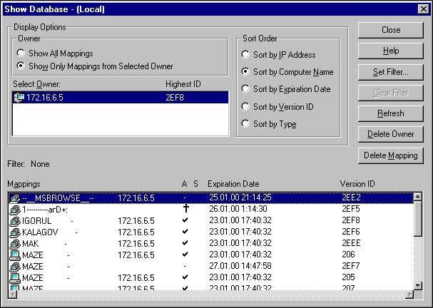

- NetBIOS - Network Basic Input Output System[2]
1.1. NetBIOS - это session-level интерфейс. Используется программами для
общения over NetBIOS совместимых транспортных протоколов. Транспортные
протоколы - это NetBEUI, TCP/IP, IPX/SPX. Cеть Windows* не живет без NetBIOS.
Никогда. Ни при каких условиях. Даже под угрозой расстрела. Неважно, что там у
вас написано в свойствах сетевого окружения - если есть это самое окружение,
значит есть и NetBIOS. Он отвечает за логические имена компьютеров на сети и
передачу данных между двумя компьютерами, установившими между собой
сессию.
NetBIOS over TCP/IP называется NetBT.
1.2. NetBIOS names
NetBIOS name закрепляется за ресурсом - не за компьютером! - только за
ресурсом, имеет размер в 16 байт. Первые 15 - собственно имя, 16-й - тип
ресурса, (00-FF hex), типы стандартизованы.
Имена делятся на:
- Unique (U)- к этому имени может быть привязан только один адрес.
- Group (G) - к этому имени не привязан адрес; На запрос WINS клиента об
адресе всегда возвращается limited broadcast address.
- Multihomed (M) - не описан в rfc 1001/1002; к этому имени может быть
привязано до 25 адресов; TTL общий для всех..
- Internet Group (Special Group) (I) - к этому имени может быть привязано
до 25 адресов; для каждого адреса хранится свой TTL.
- Domain Name (D) - про него сказано коротко: "New in Windows NT 4.0."
NetBIOS
suffixes
1.3. Name Resolution
Name Resolution в NetBIOS от рождения основано на broadcasts, что сильно
осложняет жизнь уже в средних размеров сети - любой свитч[c2]
broadcast'ы через себя не пропускает, и правильно делает[3].
Ранние версии NetBIOS'а умели пользваться для распознавания имен только
- NetBIOS name cache
- IP subnet broadcasts
- LMHOSTS
К версии NT 3.5 MS одумался и ввел улучшения. Сейчас NetBIOS умеет
пользоваться
- NetBIOS name cache - посмотреть в своем собственном кэше - нет ли там
искомого имени; в кэше имена обычно остаются на 10 мин.
- NetBIOS name server - WINS, о котором речь пойдет дальше
- IP subnet broadcasts - громко крикнуть на всю (под)сеть: "А подать сюда
Ляпкина-Тяпкина!"
- Static LMHOSTS file, для WINS клиента:
102.54.94.97 rhino #PRE #DOM:networking #net group's DC
102.54.94.102 "RTS \0x1c"[4] #special app server
102.54.94.123 popular #PRE #source server
102.54.94.117 localsrv #PRE #needed for the include
#BEGIN_ALTERNATE
#INCLUDE \\localsrv\public\lmhosts
#INCLUDE \\rhino\public\lmhosts
#END_ALTERNATE
Директивы (#PRE, #DOM, etc) описаны внутри lmhosts.sam.
- Static HOSTS file
- DNS servers
1.4. Что бы хоть как-то управлять этим разнотравьем, вводится понятие
NodeType для порядка регистрации и распознавания имен[5]:
|
B-node (Broadcast) |
Использует только broadcasts.
В TCP/IP от MS используется
"Microsoft Modified B-Node":
1. кэш 2. Broadcast 3.
LMHOSTS |
|
P-node (Point-to-Point) |
Использует только WINS. Если WINS не работает, то
ни регистрации, ни распознавания[c1]. |
| M-node (Mixed) |
Для регистрации использует broadcasts. Для распознавания
использует broadcasts, но если не получает ответа, то переключается в
P-node. |
| H-node (Hybrid) |
Пытается стать P-node; если WINS не работает,
переключается в B-node. Переключается в P-node, как только находит WINS
server. |
NodeType раздаются DHCP сервером либо (surprise, surprise!) выставляются в
registry
По умолчанию (при сконфигурированном WINS server'e ) Windows* встает в
H-node.
-
WINS.
2.1. WINS - Windows Internet Naming Service.
WINS server ==
NetBIOS Name Server (NBNS), но в MS по традиции (чтоб жизнь медом не казалась)
используются оба термина. Для тех, кто знаком с DNS, достаточно сказать что
WINS - это такой DNS от Microsoft - для NetBIOS'a. WINS отвечает за
регистрацию Netbios'овских имен и преобразование их в IP адреса. WINS хранит
базу данных вот такого вида:

Поля A и S - Active и Static, Version ID - уникальный номер, который
используется MS WINS'ом при репликации - для поиска новых записей (репликация
- процедура слияния баз нескольких WINS серверов).
WINS - в своей работе использует UDP -137 и 138 порт (и broadcast'ы - если
поймает).
На сегодняшний день я знаю два WINS сервера - один из них поставляется с NT
server, второй включен в пакет SAMBA. Какой из них использовать - дело вкуса;
если хочется [псевдо]спокойной жизни, надо использовать сервер от MS. Упадет
NT с WINS сервером - последствия для своего случая прикидывайте сами.
Если доверять продукции MS не хочется, то придется использовать samba,
несмотря на ее недостатки. К недостаткам относятся два пункта:
- Нет возможности реплицировать между собой два WINS сервера;
- Честное следование rfc. SAMBA пишется наивными людьми, которые верят,
что MS следует своим спецификациям. Понятно же, что там где-то что-то будет
сделано хоть чуть-чуть, но не так. Если уж писать WINS сервер под MS, то с
отладчиком, дизассемблером и tcpdump'ом в руках. Чтобы аккуратно повторять
все ошибки MS (см. Readme к service pack'ам на предмет слова
WINS).
2.2. Как работает WINS сервер
Основная задача WINS server'а - уметь отвечать на вопрос - а какой адрес у
сервиса "name".
Функции Name Registration, Refresh, and Release: Сервис грузится, шлет на
WINS сервер пакет Registration. В ответ получает подтверждение ( различные
ошибки и конфликты опускаю ) и время, в течение которого его регистрация
действительна - TTL. Согласно описанию от MS через TTL/2 NT[6]
(остальные клиенты могут делать refresh с другой частотой, но до истечения
TTL) должна прислать Refresh - мол вот она я, жива. И снова получить TTL. И
так до окончания работы, когда сервис должен послать пакет Release. Если TTL
истек, а сервис Refresh не прислал, WINS server о нем забывает.
MS WINS server умеет реплицировать свою базу с другими MS WINS
серверами.
- Browsing lists
Итак, с помощью WINS сервера можно получить адрес ресурса по имени "name".
Но как увидеть список всех компьютеров в сети/домене/рабочей_группе? WINS на
такие вопросы не отвечает - не обучен. Занимаются этим всяческие browser'ы. В
каждой подсети есть master browser(domain\0x1d), backup browser,
potential browser и preferred master browser, их в последнее время называют
segment browsers ( изобретенными в MS терминами можно, наверное, библиотеку
заполнить ).
Компьютеры, таким образом, разделяются на:
- Non-browser компьютеры
- Potential browsers - может стать backup browser'ом, если понадобится.
- Backup Browser - оперирует Browse lists'ами серверов и доменов, каковые
lists получает от Master Browser.
- Master Browser - Получает анонсы от компьютеров и доменов, посылает
Browse list Backup Browsers'ам, высылает по запросы клиента Browse list,
продвигает Potential в Backup Browser по мере необходимости и общается с
Domain Master Browser.
- Preferred Master Browser - то же самое, что и Backup, но выигравший
выборы за счет установки в registry флажка IsDomainMasterBrowser[c3] в
True.
- Domain Master Browser - Согласно MS'овской документации функции domain
master browser'a всегда выполняет primary domain controller[7], и
лучше бы этому не препятствовать, хотя samba и умеет (domain master = yes).
Неважно, что у вас в подсети/домене/рабочей_группе одна машина - она будет
и master, и backup, и potential. На каждые 32 компьютера добавляется еще один
backup browser. Master browser'ы занимаются тем, что обрабатывают broadcast'ы,
которые раз в time=12 минут выдает каждый компьютер и складывают результаты в
browsing lists глубоко внутри себя.
Если компьютер в течении time*3 признаков жизни не подает, master browser
удаляет его из browsing list. Итого тайм-аут между выключением компютера и
пропаданием его из neighborhood составляет 36 мин. - внутри одного сегмента.
Если компьютер выключен "gracefully", browser (имеется в виду сервис computer
browser) пошлет master browser'у соответствующее сообщение и будет вычищен из
списков сразу.
В дополнение все master browser'ы периодически[8]
анонсируют себя принадлежащими к группе \0x01\0x02__MSBROWSE__\0x02\0x01[9] в
локальной подсетке - без использования WINS, broadcast'ом. В анонсе
присутствуют имя домена и имя domain master browser'a. Master Browser'ы,
получающие такие анонсы, хранят их в internal browse lists[10]
вместе с именем компьютера, пославшего анонс.
Backup browser кэширует browsing lists у себя и инициирует перевыборы,
если не может найти master browser.
Domain master browser составляет список имен master browser'ов на основании
полученных от них Master Announcement frames, которые ему присылают сначала
после победы на выборах, а затем каждые 12 (у самбы - 15) минут. На основании
этого списка domain master browser раз в 15 минут опрашивает всех master
browsers на предмет local browsing lists, соединяет полученное в domain browse
list и раздает (по запросу, который раз в 12 минут) master browser'ам. Сами считайте,
через сколько минут выключенный компьютер пропадет из browsing lists в
остальных сегментах.
Свежезагрузившийся клиент шлет broadcast[11] на
имя domain\0x1d. Master browser возвращает соответствующий список
browser'ов, из коего списка клиент выбирает три сервера и, случайным образом
образом из этих троих выбрав одного, шлет запрос. Результат появляется в
network neighborhood'e. При обращении к компьютеру, нарисованному в Network
Neighborhood идет запрос к WINS серверу о его адресе.
В NT за browser'енье отвечает сервис Computer Browser.
Кусок
документации от samba - объяснение на пальцах того, как синхронизируются
Browsing lists в подсетях, взято из файла browsing.txt; переводить мне его
лень.
Итого, в сегментированной сети с Windows*-клиентами без WINS'а Browsing
lists не работают. А поскольку слова "сеть работает" проверяются наличием
соседских компьютеров в Network Neighborhood, то ...
- Multihomed browsers (Vladimir
Pastukhov)
Хотелось бы добавить пару слов о multihomed master browsers - у которых
более одной сетевой карты.
Собственно, MS их категорически не рекомендует.
Дело в том, что NT'шный browser отдает не полный browse list, а только ту его
часть, которая относится к подсети откуда пришел запрос (возможно, в
действительности значение имеет то, на какой адрес он пришел - негде
сейчас проверить). MS объясняет, что, мол, browser знать ничего не знает о
роутинге между подсетями, и поэтому отдавать чужую подсеть ему не с
руки.
Кое-как это лечится при помощи Q158487 - оставляем компьютер
browser'ом только в одном из сегментов. Если бедной кляче к тому же
посчастливилось быть PDC, то придется прописать в WINS (или в lmhosts на
potential browsers) static mapping типа multihomed для имени domain\0x1b с
адресом интерфейса из этого сегмента - это чтобы master browser'ы всегда
обращались по правильному адресу.
Самба всегда отдает объединенный browse
list, поэтому делать ее master browser'ом бывает очень чисто и сухо.
- Комментарий
Уф. Комментировать такой подход я не в силах, но вот коротенькое
резюме:
Все, что касается browsing lists, происходит, как это водится у MS,
"автомагически". Влиять на эту политику я умею только одним способом -
поубивав[12] сервис computer browser на всех NT в подсетке, кроме
одной, это оставит ее local/backup master browser'ом, навсегда. Но как только
эта единственная NT упадет, пропадет содержимое neighborhood.
Так что и этот подход на практике использовать нельзя...
Материалы для внеклассного чтения от MS: winswp, tcpipimp2, ntbrowse.
Предложения, пожелания, bugfixes(к тексту, не к MS) шлите мне.
Maxim Berlin, 31.01.2000.
Выношу благодарности за помощь в работе над этим материалом:
Александру
Калагову (ТЦ РТС),
Игорю Нестерову (ТЦ РТС),
Владимиру
Чухареву,
Vladimir Pastukhov,
Sergei V. Dubrov.
- Возникшие вопросы:
- Дмитрий Шеремет: Как задать адрес,
на котором WINS сервер будет принимать пакеты?
A: Для NT я не
умею. Похоже, MS WINS server хватает первый попавшийся адрес (alias или
сетевую карту). Samba поступает лучше - ей можно задать ( socket address = )
адрес сокета, который нужно слушать, но сама себя она анонсирует на первом
попавшемся адресе. Например: на сетевой карте есть два алиаса xx.12 и xx.3,
socket address = xx.12. Samba честно будет слушать xx.12 адрес, но в WINS ее
адрес будет xx.3, со всеми вытекающими последствиями. Алгоритма выбора
адресов я не знаю.
- Владимир Чухарев: Кто будет
исполнять функции Domain master browser'а, если на сети нет Primary/Backup
domain controller'а?
A1: Не знаю. Кто знает, напишите мне, пожалуйста.
A2,
Vladimir Pastukhov: Не хочет NT быть
DMB без домена, однако. Даже если ее адрес насильно в WINS прописАть с
именем workgroup[1b], самба все равно на попытки синхронизироваться получает
в ответ RST.
Резюме: Если нужен domain master browser и не нужен
domain, необходимо ставить samba.
Про канальный, сетевой и прочие уровни можно прочитать здесь: Протокол, интерфейс, стек
протоколов. Модель ISO/OSI.